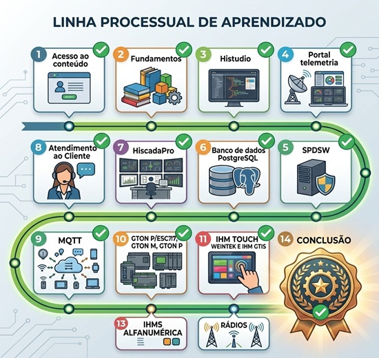

Desenvolvimento Contínuo e Práticas Avançadas
Você chegou à etapa final! O foco agora é consolidar o aprendizado através de práticas avançadas, validando todo o conhecimento adquirido e preparando o terreno para o seu desenvolvimento contínuo na automação industrial.

Leia a documentação sobre modo Loader e aplique comandos do modo loader VIA SERIAL em um CLP G5 [HIstudio] e em um CLP G3 [SPDSW].
Apresente seus resultados para os colaboradores do departamento.
Consuma o conteúdo tutorial sobre montagem do CLP P7C com expansões e monte um na bancada.
Apresente seus resultados para os colaboradores do departamento.
Acesse a pagina de formação e faça os projetos propostos.
Apresente seus resultados A CADA PROJETO para os colaboradores do departamento.
Após consumir todo o conteúdo básico de formação anterior, reproduza todo conteúdo disponível nesta planilha.
Acesse aba a aba da planilha e reproduza os tutoriais que temos por lá para continuar o seu desenvolvimento contínuo.